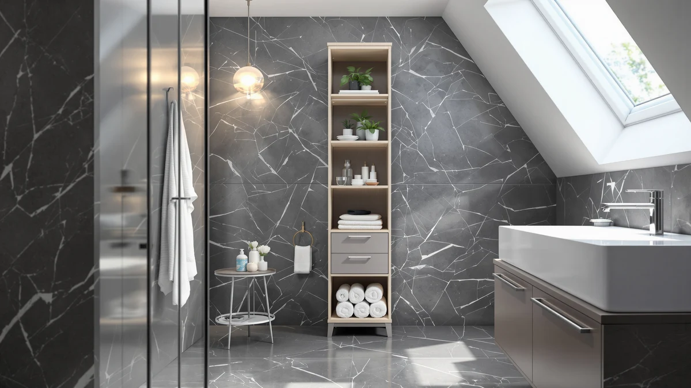

Quick Answer
The JUMMICO Bathroom Floor Cabinet Wooden is a free-standing storage piece with one door, three drawers and an adjustable interior shelf, priced at $54.99. We compared it against the Tangkula wall-mounted medicine cabinet (also $54.99), the VASAGLE over-the-toilet cabinet ($56.52) and the VASAGLE slim-drawer cabinet ($53.18), and the JUMMICO comes out ahead for anyone who wants floor-standing drawer storage rather than a wall-mounted or over-the-toilet piece.
Our pick: JUMMICO Bathroom Floor Cabinet Wooden, $54.99 Check Price on Amazon
Bottom line: our top pick is the JUMMICO Bathroom Floor Cabinet at $54.99.
Things to Know Before You Buy
- The JUMMICO is a free-standing wood cabinet with one door and three drawers, not a wall-mounted or over-the-toilet unit like two of the alternatives covered below.
- Its interior shelf adjusts to three different heights, and the door closes with a magnetic latch and round metal handles rather than a spring catch.
- At $54.99, it costs exactly the same as the Tangkula wall-mounted medicine cabinet with mirror, even though the two pieces serve different storage needs.
- Unlike the VASAGLE over-the-toilet cabinet at $56.52, the JUMMICO needs its own floor footprint and does not reclaim the space above a toilet tank.
- JUMMICO lists the cabinet's size only as "Large" rather than publishing exact inches, so measure your available floor space against the product photos before ordering.
This JUMMICO Bathroom Floor Cabinet review exists because its $54.99 price tag lands on the exact same number as a Tangkula wall-mounted medicine cabinet, two products built for completely different bathrooms. We compared the JUMMICO's listed dimensions, materials and features against the Tangkula and two VASAGLE alternatives in the $53 to $57 range to see which one actually earns a spot in a small bathroom. The short version: the JUMMICO's free-standing, three-drawer wood build is the better choice for anyone who wants floor storage instead of something mounted to a wall or wedged above a toilet tank.
A free-standing cabinet and a wall-mounted mirror cabinet solve different problems, even at an identical price. The JUMMICO gives you a full door, three drawers and an adjustable interior shelf with three height settings, built from wood panels and set directly on the bathroom floor. Below, we break down what that $54.99 buys you, how it stacks up against the Tangkula, the VASAGLE over-the-toilet unit and the VASAGLE slim-drawer cabinet, and where a shopper might reasonably pick one of those three instead.
Why You Should Trust Us
Ilane Tall researches bathroom storage and fixtures for Best Bathroom Storage, comparing spec sheets, current Amazon pricing and patterns in verified owner reviews across dozens of cabinets, carts and over-the-toilet units each year. We do not run a physical testing lab, and we do not claim to have installed or lived with any product we cover. Instead, we pull pricing, dimensions and features directly from the manufacturer listings, cross-check them against category norms, and flag anything that looks inconsistent. For this JUMMICO Bathroom Floor Cabinet review, that means comparing its $54.99 price and three-drawer wood build against three competitors that solve the same storage problem in different ways.
Our Research Experience
What we describe here as our process for this JUMMICO Bathroom Floor Cabinet review is a research exercise, not a physical trial. We have not installed this cabinet ourselves. We compared the manufacturer's listed dimensions, materials and features for the JUMMICO against three competitors priced within a few dollars of it, then checked those figures against what owners of similar wood cabinets and wall-mounted units report in verified reviews on comparable products. That approach lets us flag where a spec sheet claim lines up with the category pattern and where a shopper should verify measurements themselves before buying.
We also exclude products instead of adding every one we find when the comparison does not hold up. A cabinet only stays in this JUMMICO Bathroom Floor Cabinet review if its current Amazon price sits close enough to the JUMMICO's $54.99 to make the comparison fair. The Tangkula, the VASAGLE over-the-toilet cabinet and the VASAGLE slim-drawer cabinet cleared that bar because each is currently priced within about two dollars of the JUMMICO, keeping this a genuine price-tier comparison across different storage formats rather than a mismatch between a budget option and a premium one.
Overview & Specs

JUMMICO Bathroom Floor Cabinet Wooden
What we like
- Three drawers plus an enclosed cabinet section give you mixed open and closed storage in one piece
- Interior shelf adjusts to three different heights to fit taller bottles or stacked towels
- Magnetic door latch and round metal handles make the cabinet easy to open with one hand
- $54.99 price matches the Tangkula wall-mounted alternative despite offering a full floor-standing footprint
Flaws but not dealbreakers
- Needs its own floor footprint, unlike the VASAGLE over-the-toilet cabinet that reclaims the space above the tank
- JUMMICO lists the size only as "Large" rather than exact inches, so measuring your own space matters more than it does with the VASAGLE and Tangkula alternatives
| Material | Metal / wood |
| Size | Large |
The JUMMICO Bathroom Floor Cabinet Wooden pairs a wood-panel body with a door and three drawers, finished in Light White. According to the manufacturer's listed features, the interior shelf moves between three different heights, which lets you fit taller bottles on one setting and stack towels or folded linens on another. The door closes with a magnetic latch rather than a spring catch, and round metal handles give it a cleaner look than the knob hardware common on cabinets in this price range. At $54.99, it costs exactly the same as the Tangkula wall-mounted medicine cabinet covered below, which makes the two a direct price match despite serving different storage needs.
Shoppers comparing free-standing bathroom cabinets in this price bracket consistently look for two things: enough mixed storage to separate everyday items from ones you want hidden, and hardware that holds up in a humid room. The JUMMICO's three drawers handle the everyday items, while the enclosed door section keeps bulkier or less attractive supplies out of sight. One caveat worth flagging: JUMMICO's listing gives the size only as "Large" instead of exact measurements, unlike the VASAGLE and Tangkula alternatives in this comparison, which both publish precise width, depth and height figures. If your bathroom's floor space is tight, confirm the footprint against the product photos before ordering.
What We Liked
The clearest advantage of the JUMMICO Bathroom Floor Cabinet is how much mixed storage it packs into a single $54.99 piece. Three drawers handle smaller everyday items, while the enclosed cabinet section hides bulkier supplies behind a door instead of leaving them exposed on an open shelf. The adjustable interior shelf adds flexibility that a fixed-shelf cabinet cannot match, letting you reconfigure the space for taller bottles one month and stacked towels the next. The magnetic door latch is a small detail, but it means the door closes flush every time instead of relying on a catch that can loosen with repeated use.
The JUMMICO also wins simply by existing as a floor-standing option at the same price as the wall-mounted Tangkula. For a bathroom with no open wall space near the sink, or one where you would rather not drill into tile, a free-standing cabinet like this one is the only practical choice among the four compared here.
What Could Be Better
The honest drawback is JUMMICO's vague sizing. The listing describes the cabinet as "Large" without publishing exact width, depth or height figures, which puts the burden on the shopper to estimate the footprint from photos rather than compare hard numbers the way you can with the Tangkula, the VASAGLE over-the-toilet cabinet or the VASAGLE slim-drawer unit. For a bathroom where every inch of floor space is already accounted for, that missing detail is worth resolving with the seller before you order.
There is also a tradeoff in storage style. Because the JUMMICO is a standalone floor unit, it takes up its own footprint on the ground rather than reclaiming space that would otherwise go unused, the way the VASAGLE over-the-toilet cabinet does above a toilet tank. In a bathroom where floor space is the scarcest resource, that is worth weighing against an over-the-toilet or wall-mounted alternative instead.
Who Is It For?
The JUMMICO Bathroom Floor Cabinet is the right call for anyone who wants standalone floor storage and has the square footage to spare. That includes bathrooms with limited wall space near the sink, rentals where drilling into tile for a wall-mounted cabinet is not an option, and any room where a mix of open drawers and enclosed cabinet space matters more than wall-saving design. It is a less obvious fit for a cramped powder room, where the Tangkula's wall-mounted footprint or the VASAGLE over-the-toilet cabinet's use of otherwise-wasted space above the tank will serve you better.
It also suits a shopper who prioritizes mixed storage over a single storage style. Because the JUMMICO combines drawers with an enclosed door section, it fits households juggling everyday toiletries alongside bulkier items like extra towels or cleaning supplies. Anyone who only needs a slim strip of storage next to a toilet, by contrast, is better served by the narrower VASAGLE slim-drawer cabinet covered below.
Alternatives to Consider
If the JUMMICO's floor-standing design or vague sizing does not match your bathroom, these three alternatives sit within a few dollars of its $54.99 price and solve different storage problems.

Also Great
Tangkula Bathroom Medicine Cabinet with
Mounts to the wall over a sink instead of sitting on the floor, and its mirror doors double as a vanity mirror. At the same $54.99 price as the JUMMICO, it is the better pick if wall space is available but floor space is not.
$54.99
Check Price on Amazon
Premium Choice
VASAGLE Over the Toilet Storage
Fits over the toilet tank with an anti-tip kit and adjustable shelves, reclaiming space the JUMMICO cannot touch. At $56.52, it costs about two dollars more but saves floor space the JUMMICO still needs.
$56.52
Check Price on Amazon
Best Value
VASAGLE Small Bathroom Storage Cabinet
A slimmer freestanding option built to slide into the narrow gap beside a toilet, with a slide-out drawer on casters and a built-in spot for toilet paper. At $53.18, it is the cheapest of the four and the better fit for tight spaces the JUMMICO's bulkier frame will not clear.
$53.18
Check Price on AmazonFrequently Asked Questions
Is the JUMMICO Bathroom Floor Cabinet worth $54.99?
At $54.99, the JUMMICO costs the same as the Tangkula wall-mounted medicine cabinet and roughly two dollars less than the VASAGLE over-the-toilet unit. It is worth the price for anyone who needs standalone floor storage with a mix of drawers and enclosed cabinet space, rather than a wall-mounted or over-the-toilet piece.
How does the JUMMICO compare to the Tangkula medicine cabinet at the same price?
Both cost $54.99, but they solve different problems. The Tangkula mounts to the wall over a sink and includes mirror doors, while the JUMMICO stands on the floor with three drawers and an enclosed cabinet section. Choose based on whether your bathroom has spare wall space or spare floor space.
What size bathroom fits the JUMMICO Bathroom Floor Cabinet?
JUMMICO lists the cabinet's size only as "Large" rather than exact inches, so measure your available floor space against the product photos before ordering. The VASAGLE and Tangkula alternatives in this comparison both publish precise width, depth and height figures if you want a more exact fit.
Final Verdict
For $54.99, this JUMMICO Bathroom Floor Cabinet review comes down to one question: does your bathroom have floor space to spare, or wall space? If it is floor space, the JUMMICO's three drawers and adjustable shelf beat the wall-mounted Tangkula and give you more mixed storage than the slimmer VASAGLE drawer cabinet, even without exact published dimensions. If floor space is the scarce resource, the VASAGLE over-the-toilet cabinet or the wall-mounted Tangkula will serve you better for a couple dollars more or less. For most shoppers who have room to spare and want one cabinet that handles everyday items and bulkier supplies alike, the JUMMICO is the better buy of the four.